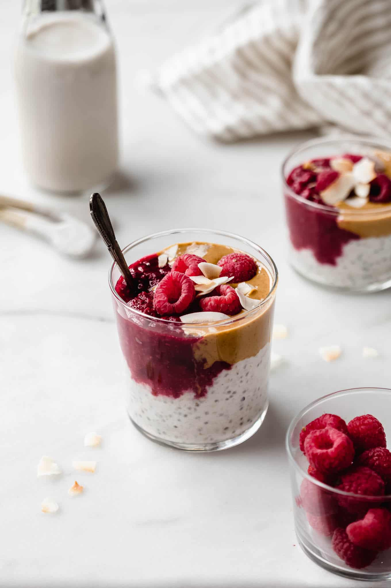

Peanut Butter Overnight Oats

Description
New favourite breakfast alert! These 6-ingredient oats are super easy to whip up the night before and divide into jars. Add fresh fruit in the morning and you'll be ready to smash your workout and whatever the day brings.
Ingredients
- 1 cup (3 1⁄2 oz) rolled oats (or brown rice flakes or quinoa flakes if gluten free)
- 1⁄4 cup (1 oz) vanilla protein powder (or natural protein powder)
- 1⁄2 cup (4 fl oz) milk, reduced fat (or dairy-free alternative)
- 1⁄2 cup (4 fl oz) water
- 1 tsp maple syrup (honey or rice malt syrup)
- 1 tbs crunchy natural peanut butter (or other nut butter)
- 1 tsp water hot
- 6 fresh or frozen raspberries
Steps
- Combine oats, protein powder, milk, water and maple syrup in a small bowl. Stir to combine and divide between serving glasses.
- Combine the peanut butter with hot water, adding more if necessary to soften. If still too firm, microwave for 20 seconds. Swirl half the softened peanut butter into the oats and dot the remaining on top. Cover with cling wrap and refrigerate overnight.
- Top oats with raspberries to serve.